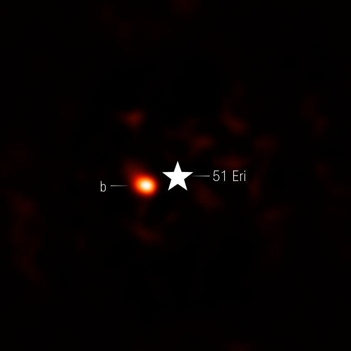

Photographing a planet around another star is hard because the star's glare swamps the planet's faint light. Astronomers at Northwestern University now report a way to clean up that glare in software. Applied to observations from the James Webb Space Telescope (JWST), their method picked out a giant planet that standard processing could not separate from the leftover starlight.
The study, titled "Imaging exoplanets below the telescope stability limit", was published in Nature on 4 November 2026. It was led by Rodrigo Ferrer-Chavez, a PhD student in astronomy at Northwestern, working in the group of physicist and astronomer Jason Wang.
How the method works
Webb's NIRCam camera uses a coronagraph, a mask that blocks most of a star's light. Some glare always leaks through, and it shifts slightly as the telescope wobbles and its optics change by tiny amounts. The team's method, called FLIP (Physics-based Learning for Imaging Planets), builds a detailed simulation, or "digital twin", of how starlight travels through the telescope to the detector.
The researchers tuned millions of settings in the model until it matched the real telescope's small flaws, such as slight shifts in position and optical distortions. They then subtracted the simulated glare from the real images. Wang said the team used the same computer tools that are used to train AI models, but the method itself does not use AI to find planets.
"It is something like an artificial eclipse." (Rodrigo Ferrer-Chavez, Northwestern University, describing the coronagraph)
A known planet, seen again
The team reanalysed archival Webb observations of three stars: HIP 65426 and 51 Eridani, both of which have known planets, and TYC 5899, which has none. FLIP was 2 to 15 times more sensitive to faint planets than standard techniques, with the biggest gains close to the star. In roughly two-year-old data of 51 Eridani, taken at a wavelength of 4.3 microns where carbon dioxide absorbs strongly, it detected the giant planet 51 Eridani b with a significance above 5 sigma, a common threshold for a confident signal.
There are clear limits. 51 Eridani b was discovered years ago with ground-based telescopes, so this is a test of the method rather than the discovery of a new world. The work used only three archival targets, and the model has to be tuned to each set of observations before it can remove the glare.
Dimitri Mawet, a senior research scientist at NASA's Jet Propulsion Laboratory who was not involved in the study, called it "a significant result" in Scientific American. He said such physics-based processing could ease part of the extreme stability requirements of NASA's proposed Habitable Worlds Observatory, a future telescope meant to image Earth-like planets that is slated to launch in the 2040s. Imaging Earth-sized worlds would need a telescope 100 to 1,000 times more stable than Webb.
